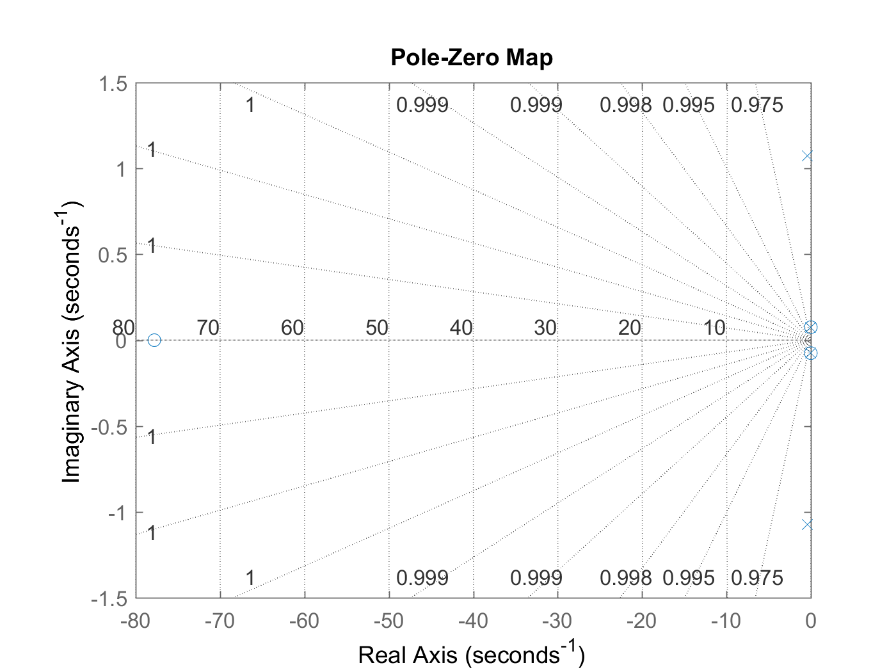
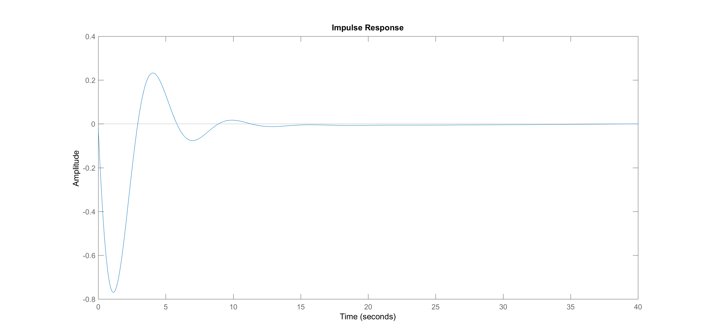
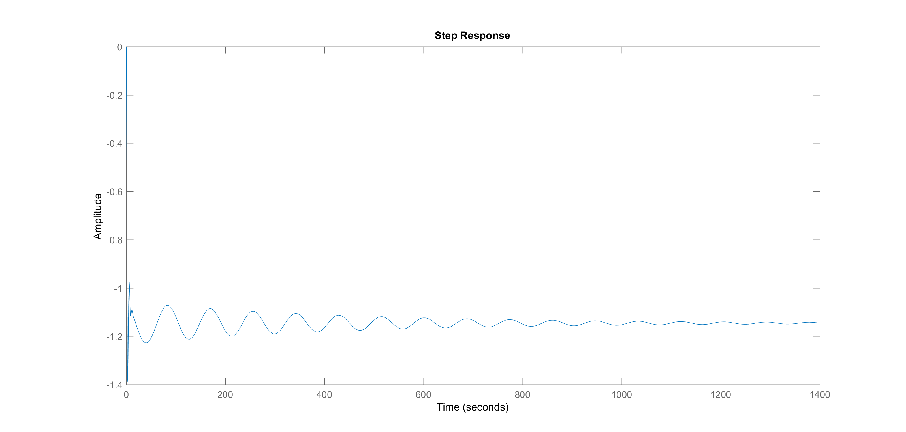

Contents
Problem 1 Part A: Determine Poles and Zeros of Transfer Function
Generate transfer function in matlab
num = [-0.01785 -1.38873 -0.0088536 -0.0079611] denom = [1 0.81066 1.32005596 0.01038106 0.0069483] tfsys = tf(num, denom)
num =
-0.0179 -1.3887 -0.0089 -0.0080
denom =
1.0000 0.8107 1.3201 0.0104 0.0069
tfsys =
-0.01785 s^3 - 1.389 s^2 - 0.008854 s - 0.007961
--------------------------------------------------
s^4 + 0.8107 s^3 + 1.32 s^2 + 0.01038 s + 0.006948
Continuous-time transfer function.
Compute the poles of the transfer function model
poles = pole(tfsys)
poles = -0.4030 + 1.0717i -0.4030 - 1.0717i -0.0023 + 0.0728i -0.0023 - 0.0728i
Compute the zeros of the transfer function model
zeros = zero(tfsys)
zeros = -77.7937 + 0.0000i -0.0032 + 0.0757i -0.0032 - 0.0757i
Problem 1 Part B: Is the system stable?
Looking at the roots of the denominator (the poles) we can generate pole-zero plot. For BIBO stability the poles must be in the left hand plane
pzmap(tfsys)
grid on
 We can see here that our poles are not in the left hand plane, so this system is BIBO stable. BIBO stability also states that the roots of our transfer function must have negative real parts. We can observe:
real(poles)
ans = -0.4030 -0.4030 -0.0023 -0.0023
That our values are indeed negative real, as well as repeated roots Finally, we can plot an unit impulse response of our system to see if it goes to zero as time approaches infinity
impulse(tfsys)
Our system reaches zero as time moves to infinity, so its BIBO stable in all cases
If we looked into internal stability, we see that with our repeated roots our system is not marginally stable. Since the real roots have a negative part however, we are asympototically stable.
What are our natural frequencies and damping ratio?
[W, zeta] = damp(tfsys)
W =
0.0728
0.0728
1.1450
1.1450
zeta =
0.0320
0.0320
0.3520
0.3520
Problem 1 Part C: Are there any pole-zero cancellations?
If we take our transfer function back to state space, and observe eigenvalues of our A matrix. We can see if any of the poles or zeros were cancelled
[A, B, C, D] = tf2ss(num, denom)
A =
-0.8107 -1.3201 -0.0104 -0.0069
1.0000 0 0 0
0 1.0000 0 0
0 0 1.0000 0
B =
1
0
0
0
C =
-0.0179 -1.3887 -0.0089 -0.0080
D =
0
Take our realization and put it into state space form
sys = ss(A, B, C, D)
sys =
A =
x1 x2 x3 x4
x1 -0.8107 -1.32 -0.01038 -0.006948
x2 1 0 0 0
x3 0 1 0 0
x4 0 0 1 0
B =
u1
x1 1
x2 0
x3 0
x4 0
C =
x1 x2 x3 x4
y1 -0.01785 -1.389 -0.008854 -0.007961
D =
u1
y1 0
Continuous-time state-space model.
Find poles and zeros
ss_poles = pole(sys) ss_zeros = zero(sys)
ss_poles = -0.4030 + 1.0717i -0.4030 - 1.0717i -0.0023 + 0.0728i -0.0023 - 0.0728i ss_zeros = -77.7937 + 0.0000i -0.0032 + 0.0757i -0.0032 - 0.0757i
Check eigenvalues of A as well to see if it matches with poles of our transfer function
eig(A)
ans = -0.4030 + 1.0717i -0.4030 - 1.0717i -0.0023 + 0.0728i -0.0023 - 0.0728i
As we can see, there is no pole-zero cancellation
Problem 1 Part D: Convert to State Space Form
sys = ss(A, B, C, D)
sys =
A =
x1 x2 x3 x4
x1 -0.8107 -1.32 -0.01038 -0.006948
x2 1 0 0 0
x3 0 1 0 0
x4 0 0 1 0
B =
u1
x1 1
x2 0
x3 0
x4 0
C =
x1 x2 x3 x4
y1 -0.01785 -1.389 -0.008854 -0.007961
D =
u1
y1 0
Continuous-time state-space model.
Problem 1 Part E: Plot step response
step(sys)